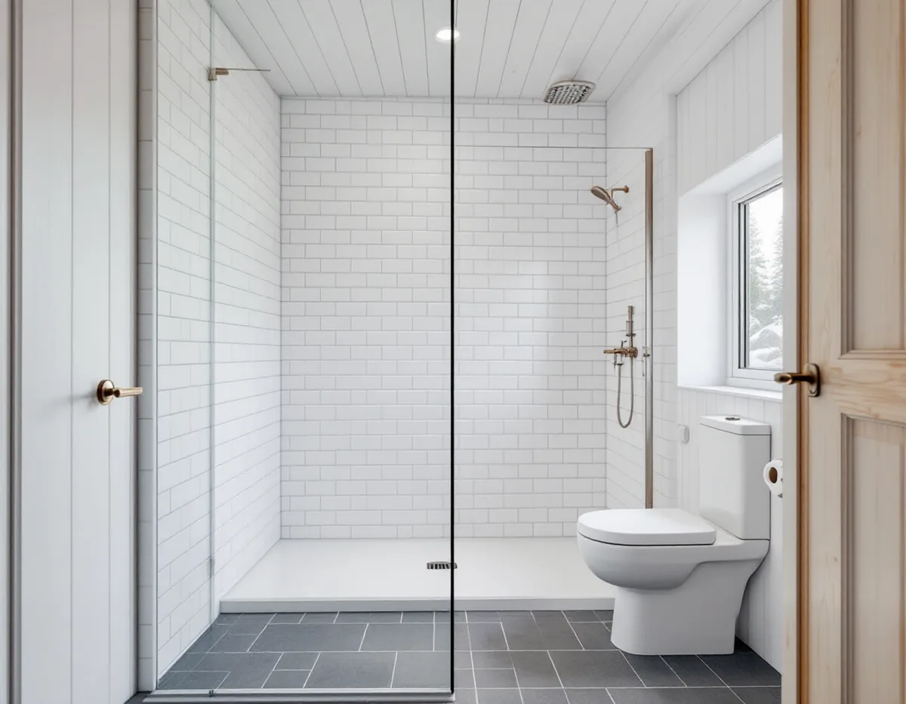
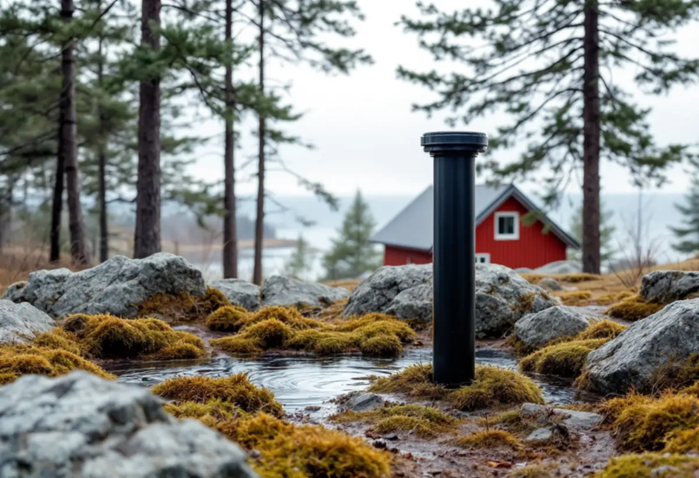

Avlopp och vatten
Vi tar reda på om huset har kommunalt VA, ett befintligt tillstånd eller inget avlopp alls.
I Norrtälje kommun får många hus sitt första riktiga badrum först när sommarhuset ska användas året runt. Då gäller kommunens egna regler för avlopp, som är strängare än på många andra håll. Geal Entreprenad AB river, bygger tätskikt och ytskikt och samordnar VVS och el, och vi går igenom avlopp och vatten innan badrummet ritas. Platsbesöket är gratis och du får ett skriftligt kostnadsförslag.

SCB räknade 2025 till 27 352 fritidshus i Norrtälje, fler än i någon annan kommun i landet. Värmdö kom tvåa med 14 709. Det säger något om vilka badrum som byggs här: ofta i ett hus som från början hade ett enkelt våtrum, en dusch i uthuset eller ingen toalett alls.
När ett sådant hus får en dusch, en vattentoalett och kanske en tvättmaskin ändras både mängden vatten och vad det innehåller. Därför är avloppet den första frågan, före kakel och porslin. I tätorterna med kommunalt VA ligger frågan i stället hos Norrtälje Vatten och Avfall, som vill veta om fastighetens användning ändras.
Rotavdrag gäller även för ett fritidshus som du äger. Mer om att bygga om sommarhuset finns under snickare i Norrtälje.

På kommunens sida om enskilt avlopp står att Norrtälje har egna regler som kan avvika från andra kommuners. Tillstånd krävs för att installera ett avlopp för vattentoalett, för att installera ett avlopp för bad-, disk- och tvättvatten, för att koppla en vattentoalett till ett avlopp som tidigare bara tog emot BDT-vatten och för att flytta en befintlig anläggning. Åtgärden får inte påbörjas innan tillståndet finns.
Anmälan räcker för att koppla fler byggnader till en befintlig anläggning, för att dra om ledningarna, för att byta en toalett så att spolvattenmängden ökar och för att ändra reningstekniken. Anmälan ska då lämnas sex veckor innan arbetet ska göras.
Är du osäker rekommenderar kommunen att du gör en ansökan. Den övergår till en anmälan om det räcker, och behövs ingenting avslutas ärendet utan avgift. Den som installerar ett tillståndspliktigt avlopp utan tillstånd kan få betala miljösanktionsavgift. För ett nytt badrum betyder det att tidplanen börjar hos kommunen.
Kommunen ligger till största delen under den marina gränsen och har alltså en gång varit täckt av salt eller bräckt vatten. Enligt sidan om enskilt vatten kan saltvatten tränga in i en brunn som är borrad för djupt eller där uttaget är för stort, och på sommaren och i tätbebyggda områden kan det bli extra kritiskt. Första åtgärden kan vara att höja pumpen och minska förbrukningen.
Ett badrum som används av fler personer året runt tar mer vatten. Norrtälje Vatten och Avfall skriver att en snålspolande kran kan halvera vattenuttaget jämfört med en traditionell, med bibehållet tryck. Snålspolande toalett, blandare och duschmunstycke är därför ett naturligt val när brunnen är begränsad.
Livsmedelsverket rekommenderar att vattnet från en privat brunn analyseras minst vart tredje år, och kommunen hänvisar till Vattencentrum, som ger kostnadsfri och opartisk rådgivning om enskilt vatten och avlopp.
Ett sommarhus står ofta oanvänt i veckor. Norrtälje Vatten och Avfall varnar för att mikroorganismer, bland annat legionellabakterier, förökar sig där vattnet står stilla och är varmare än 20 grader. Smittan sprids genom vattendimma, till exempel i en dusch.
Rådet är att spola kranar och tappställen regelbundet, särskilt de som sällan används. Varmvattnet ska vara minst 60 grader i beredaren och minst 50 grader vid tappstället efter en minuts spolning, och kallvattnet ska vara under 20 grader. I badrummet planerar vi därför korta rördragningar till duschen, så att lite vatten blir stående i ledningarna.
Är huset anslutet till kommunalt VA ska du meddela Norrtälje Vatten och Avfall om användningen av byggnaden ändras, eftersom det kan ge en tilläggsavgift. Fönster och tak i Roslagen behandlas under fönsterbyte i Norrtälje och takbyte i Norrtälje.
Vi tar reda på om huset har kommunalt VA, ett befintligt tillstånd eller inget avlopp alls.
Krävs tillstånd eller anmälan väntar bygget tills beslutet finns, och vi anpassar tidplanen.
Du får ett skriftligt kostnadsförslag där rivning, tätskikt, VVS, el och ytskikt står var för sig.
Golvet byggs upp med fall mot golvbrunnen, och väggarna får skivor för tätskikt.
Behöriga installatörer drar rör och el och monterar snålspolande porslin och blandare.
Vi visar ventiler och beredare och lämnar dokumentationen från tätskikt och VVS.
Avdraget är 30 procent av arbetskostnaden och högst 50 000 kr per person och år, med ett gemensamt tak på 75 000 kr för rot och rut. Det gäller både permanentbostad och fritidshus som du äger.
Material och resor ger inget avdrag. Geal drar avdraget direkt på fakturan.
Om avloppet kräver tillstånd eller ombyggnad, om badrummet byggs i ett tidigare torrt rum, hur huset är grundlagt och vilka ytskikt du väljer. Platsbesöket är gratis, och du får ett skriftligt kostnadsförslag.
Tätskikt, golvbrunn, el, VVS och intyg.
Badrumsrenovering i Stockholm →Takbyte, takbesiktning och plåtarbeten.
Takläggare i Norrtälje →Roslagen, skärgård och fritidshus.
Takrenovering i Norrtälje →Roslagens hus, bruksorter och bidrag i Norrtälje.
Fönsterbyte i Norrtälje →Plankgolv i gamla gårdar och parstugor.
Golvläggare i Norrtälje →Trähus, fritidshus och kustlägen i Norrtälje.
Målare i Norrtälje →Fritidshus, altan och gäststuga.
Snickare i Norrtälje →Kust, snö och Roslagens tak.
Takbyte i Norrtälje →